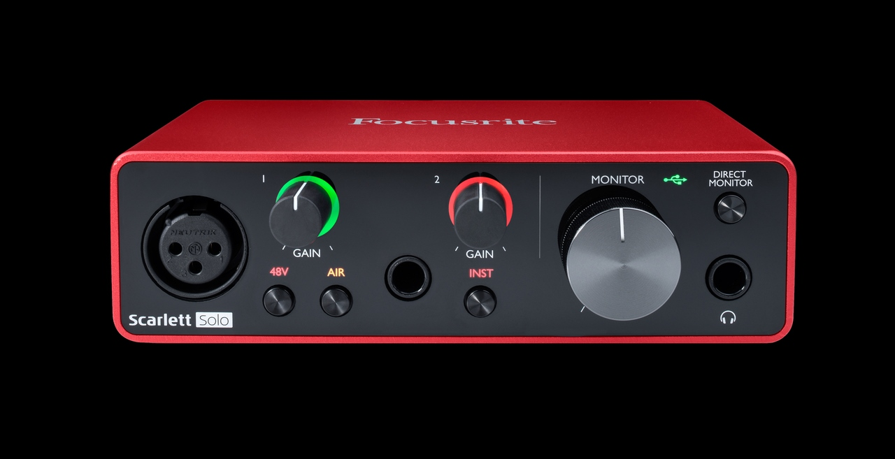
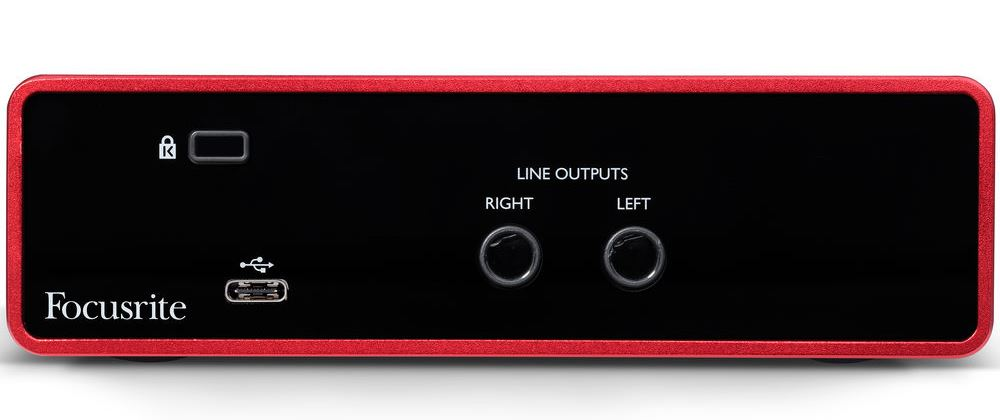
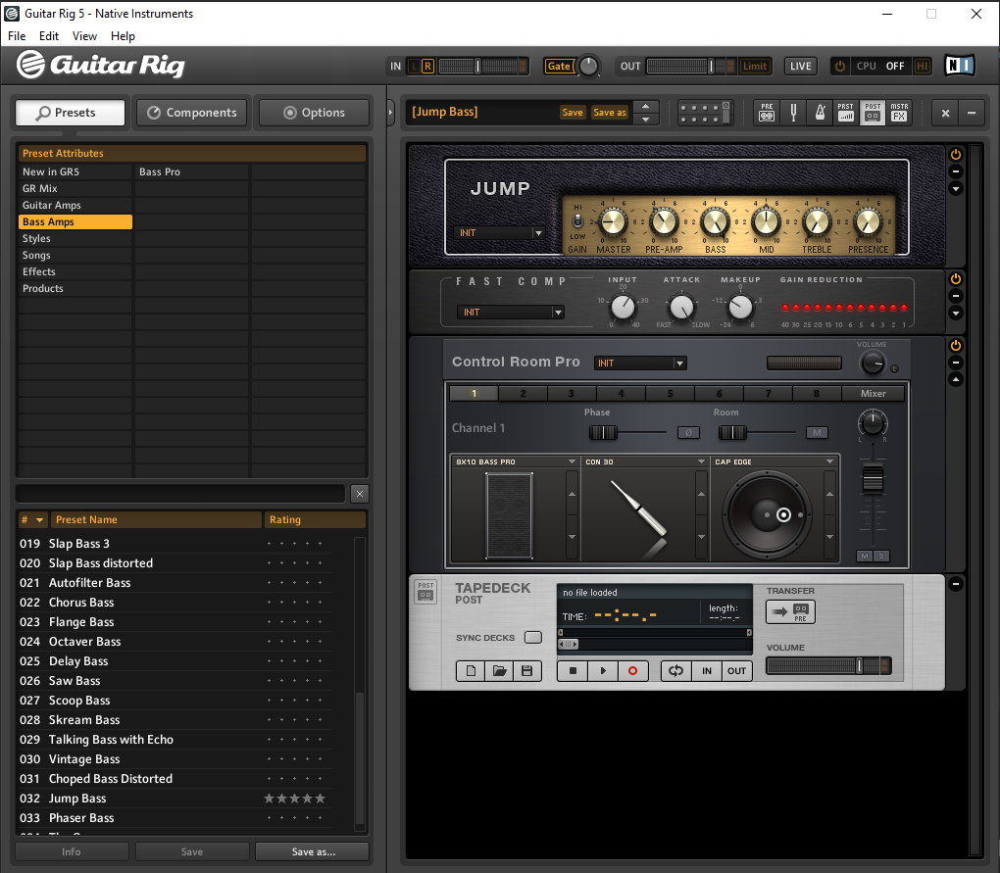
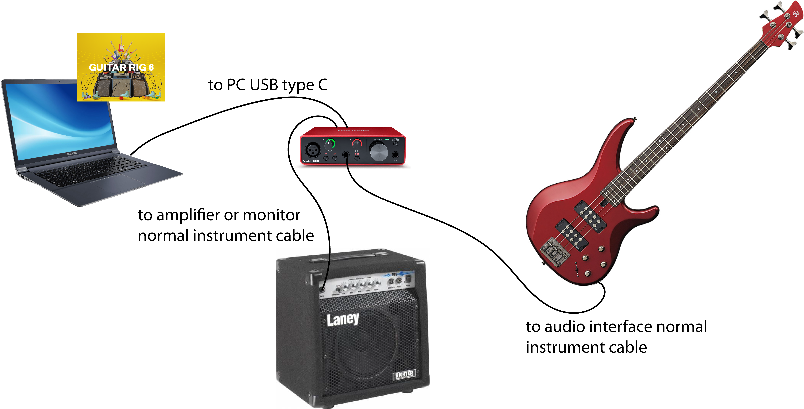

do you practice a music instrument? music is like terapy for me :)

I have this, a yamaha 4 strings bass, pretty basic
Then I bought this audio interface, a scarlett solo 3 gen

Right now I'm using guitar rig as recording and effects sofware
This is the whole setting
the whole process is
- practice, of course
- set your recording tools and camera
- record the audio (the bass line in my case)
- simultaneously record the video
- mix the recording with the original song (I use adobe audition)
- mix the audio (previous mix) with the video and synchronize
- export final video, final checks and upload to youtube
- face copyright issues on youtube / facebook LOL
This is me practicing